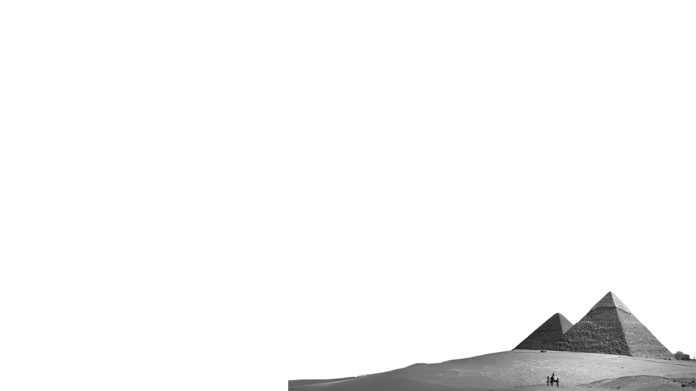

AARU is the name for heavenly paradise in Egyptian mythology. Ruled over by Osiris, an Egyptian god, the location has been described as the ka of the Nile Delta.In Ancient Egypt, the afterlife held deep significance, with the soul's journey meticulously guided by intricate beliefs. Central to this was the "Weighing of the Heart," where a person's heart was weighed against the feather of Maat, representing truth. Those deemed righteous embarked on a perilous journey through guarded gates to reach Aaru, a paradise in the east with reed-covered islands. Here, they found eternal peace and pleasure, while Osiris presided over the "field of offerings." This succinctly encapsulates the profound spirituality and symbolism of Ancient Egyptian beliefs about the afterlife.
We want people to discover the truth of Egypt, our AARU, a land steeped in history with a treasure trove of kings, queens, and temples. Egypt's past is as expansive as its iconic landmarks, from the grandeur of the pyramids to the mystery of the Sphinx. Join us on a journey through Egypt's rich heritage, where each site reveals stories of wisdom and wonder. It's an exploration of humanity's quest for knowledge and enlightenment, waiting to be uncovered with every step.
//The music is running in the background.
